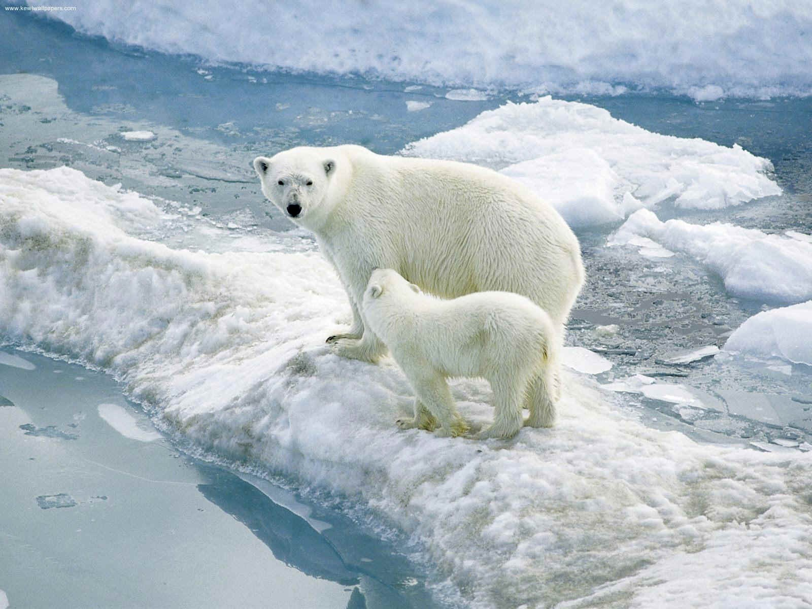
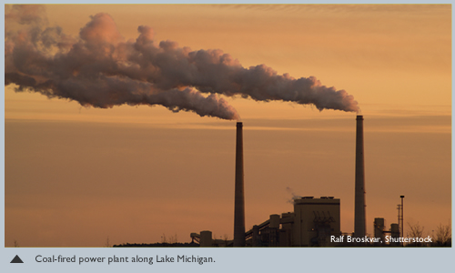
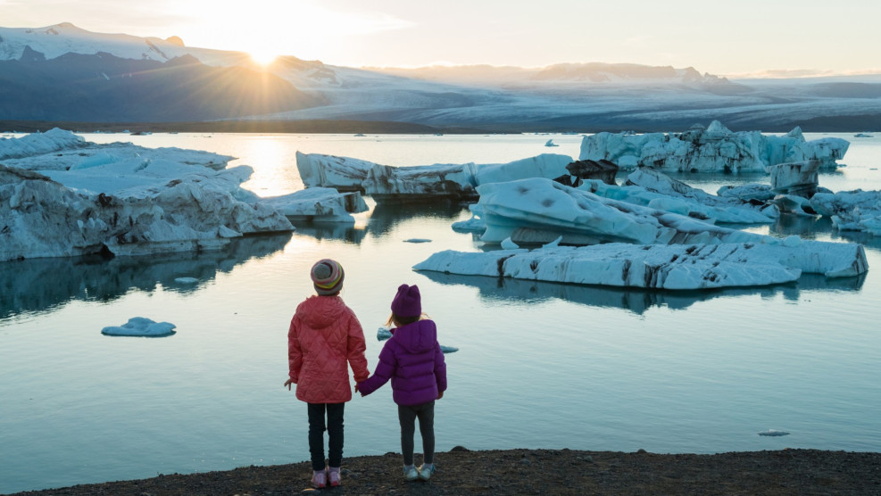
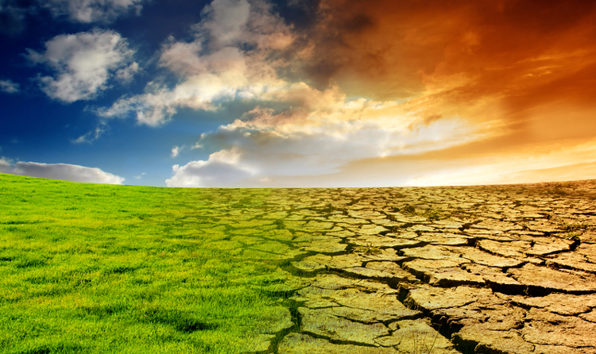
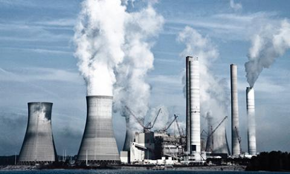
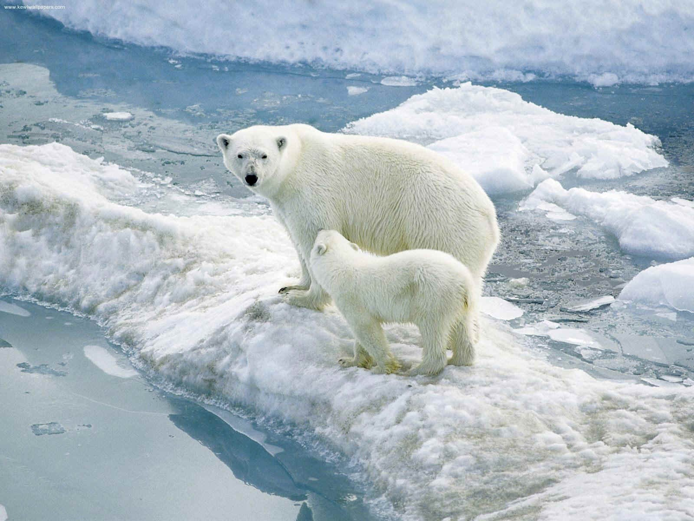
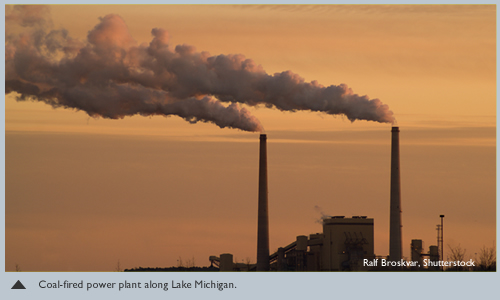
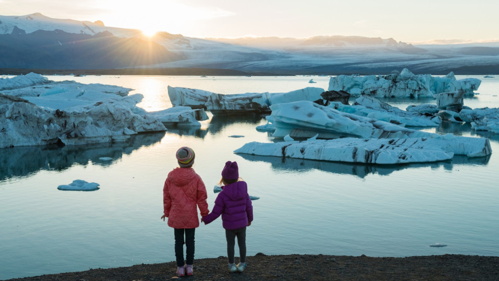
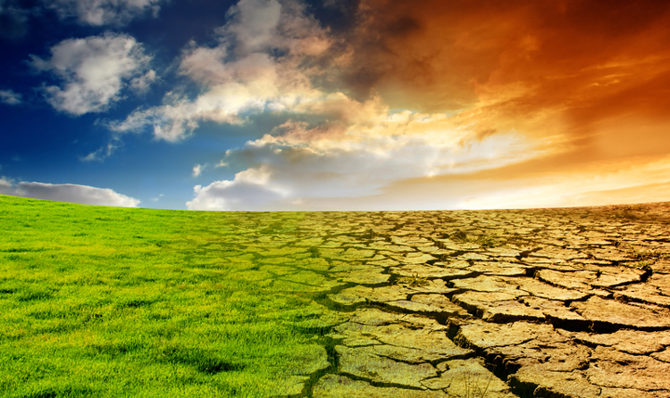
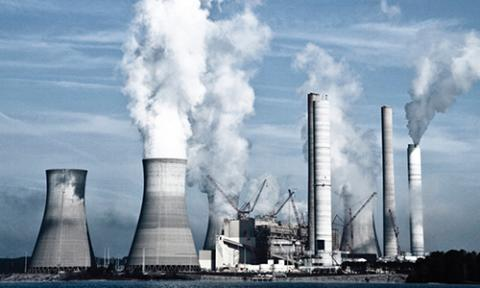

Posljedice koje nam donosi globalno zatopljenje!
Klimatske promjene rastući su problem s kojim se čovječanstvo mora suočiti. Skretanje pogleda ili prebacivanje kanala kada takva tema dođe na red jednostavno više nije opcija. Nekada se govorilo kako planet treba sačuvati za generacije koje tek dolaze, no vrijeme je da se svi suoče s istinom – Zemlju treba spasiti za sebe. Neprestano zagađivanje okoliša i nepromišljeno ponašanje dovelo je do ubrzanja procesa klimatskih promjena koji je sa sobom donio niz neželjenih posljedica, među kojima je i globalno zatopljenje. Prosječna globalna temperatura u zadnjih sto godina povećala se za jedan stupanj. Iako ova brojka na prvu nije šokantna, sve ono što je zatopljenje uzrokovalo i više je od navedenog epiteta. Topljenje ledenjaka dovodi do povećanja razine mora, ali i do ugrožavanja raznih životinjskih vrsta. Na Antarktici su neke vrste toliko ugrožene da su nestale za više od 90 posto, dok ostale migriraju u potrazi za hladnijim domom. Zagrijavanje mora i oceana doprinijelo je velikom rastu populacije komaraca, krpelja, meduza i različitih štetnih organizama koji napadaju poljoprivredne usjeve.
Efekt staklenika problem je koji doprinosi globalnom zatopljenju. Razni ispušni plinovi, poput onih iz automobila ili tvornica, odlaze u atmosferu i blokiraju odlazak topline sa Zemlje u svemir. Osim štetnih plinova, nedostatak šuma također je jedan od uzroka jer nema drveća koja bi upijalo ugljikov dioksid. Jedna od negativnih posljedica također su i pretjerano obilne oborine ili pak njihov nedostatak. U nekim područjima svijeta sve je veći broj poplava, tajfuna i uragana, dok se drugi suočavaju s velikim sušama i planinama bez snijega. S obzirom na trenutni razvoj događaja, moguće je predvidjeti s čime će se Zemlja suočiti u bliskoj budućnosti. Trenutna su predviđanja da će se razina mora podići za visinu od 26 do 82 centimetara do kraja ovog stoljeća. Prirodne nepogode bit će sve češće, a suše sve jače i duže, neke čak i desetak godina. Pitke vode bit će manje, a mnoge životinjske vrste, poput polarnog medvjeda, suočit će se s potpunim nestankom. Isticanje ovih činjenica nekima se može činiti kao pretjerivanje, nekima kao zastrašivanje, no zapravo je to poziv ljudima da se probude i osvijeste. Svaki negativni scenarij može se spriječiti ili je moguće umanjiti njegovu štetnost. Potrebno je educirati svakoga o važnosti ekološki prihvatljivog ponašanja i dokazati da se jednim malim, naizgled beznačajnim postupkom, poput bacanja plastične boce u za to predviđeni kontejner, zaista može spasiti svijet.
 








